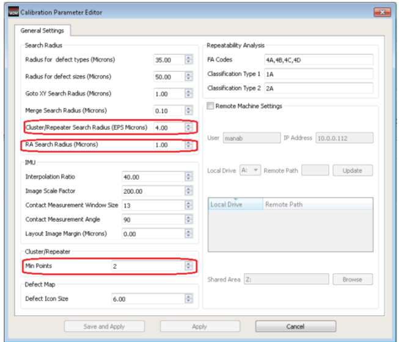
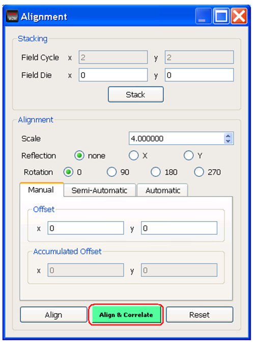
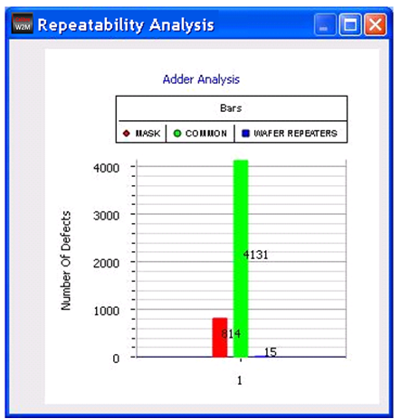

Repeatability Analysis is performed across
mask and wafer inspection data. The reference inspection in Wi2Mi
is always the mask inspection file.
The “added” defects are defects present exclusively on mask and
not on the wafer. A mask defect that corresponds to a defect on
the wafer within a given search radius is called as a common defect.
The missing defects are defects that are present exclusively on
the wafer and not on the mask.
Procedure
- Load two
valid inspection files. Note that even after the two valid inspection
files are loaded, the Repeatability Analysis window is initially
empty and hidden.
Correlation of mask and wafer data means identifying
the mask defects that are common to wafer defects. When the reticle
field is replicated on the wafer, defects on the reticle are repeated
on the wafer. To identify such mask and wafer defects (common defects), the
Wi2Mi tool considers the common search radius which gives the tolerance
of the mask and wafer defect location
- Set the
Common Search Radius.
This can either be one by editing the Common Search
Radius in the dat-ini.xml file, or be edited
in the Calibration Parameter Editor.
Figure 1. Setting
Search Radius in the Calibration Parameter Editor
You can optionally edit the Repeater Set Search Radius. This
parameter is used to identify the wafer repeater defects within
the given search radius. The Min Points parameter determines the
number of defects which has to fall within the given Repeater Set
Search Radius to be identified as a repeater group.
Click the Apply button to apply changes.
- To view
the Repeatability Analysis click the Align & Correlate button
on the Alignment Window.
The following figure shows an example.
Figure 2. Alignment
Dialog Box With Align & Correlate Button
Results
The Repeatability Analysis window shows the graph of adder, common,
and missing defects as shown in the following figure.
Figure 3. Wi2Mi
Repeatability Analysis Results
See “Wi2Mi Repeatability Analysis Window” for a
complete description of this window.